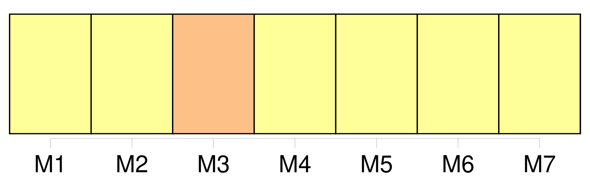
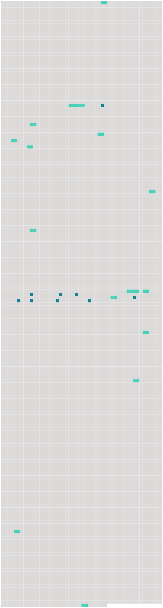

Longueur nb maillons : 24 mentions |
  |
Et pendant les vacances notre mère nous emmenait dans la petite maison qu'elle possédait, tout près de chez son frère, que nous appelions oncle meunier, et dont [le moulin] tournait sur une jolie rivière descendant à la Loire. [77 phrases] Dans un instant, mon père et ma mère viendront me prendre pour me conduire [au moulin de la Haie] , chez oncle meunier, [où] je continuerai à vivre étendue, en attendant ma complète guérison. [11 phrases] Le village dépassé, nous suivons la route qui descend à la rivière et la longe jusqu' [au moulin] [8 phrases]
C'est chez Manine, la jeune veuve du garçon meunier, dont la maison est séparée [du moulin] par un grand verger, et une petite genêtière. [2 phrases] Mon installation finie, mes parents s'en vont [au moulin] avec tante Rude et oncle meunier. [4 phrases] Tante Rude l'a tout de suite employée aux travaux [du moulin] et des champs, puis, vers sa dix-huitième année, sans s'inquiéter de son goût, elle l'a mariée au garçon meunier qui touchait à la quarantaine. [27 phrases]
La première fois que je revins [au moulin] avec mon tablier plein d'œufs et que je racontai comment je m'y étais prise pour les avoir, oncle meunier rit de mon adresse, et dit : [18 phrases]
Levée avec le jour, elle change en hâte les langes de l'enfant, approche le berceau de mon lit, et s'en va en courant aider tante Rude [au moulin] , pour revenir plus vite encore aux heures de la tétée. [31 phrases] Et surtout, il y a [le moulin à vent] [Ce moulin] change de forme selon que le temps est clair ou couvert et toujours [il] attire notre attention. Lorsque par temps gris [il] est au repos, [il] devient pour nous un cerf en péril venant de gravir précipitamment la côte, et arrêté net devant l'étendue du plateau. [1 phrases] Par grand vent, [le moulin] a toute notre pitié tant [ses] gestes désordonnés semblent appeler au secours.
Mais lorsque par vent doux, [il] ouvre toutes grandes [ses] ailes blanches au soleil, nous ne [le] perdons pas de vue, nous attendant toujours à [le] voir quitter la terre dans une envolée pleine d'orgueil. [28 phrases] Angèle a inventé une jolie prière à la Vierge, afin qu'elle nous accorde la grâce d'aller passer nos vacances [au moulin] [35 phrases] Je pensai alors aux convulsions, et je suppliai Clémence d'aller chercher du secours [au moulin] [99 phrases]
La voici : [53 phrases]
Je les prévins seulement que nous allions rester longtemps [au moulin] , par mesure d'économie. |
 |
La ressource peut être téléchargée sur la page Ortolang
Si vous avez des questions ou vous voyez des erreurs, merci d'envoyer un mail à silvia.federzoni89@gmail.com
Site développé par S. Federzoni (contact)